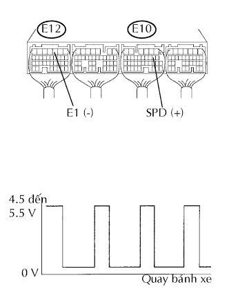
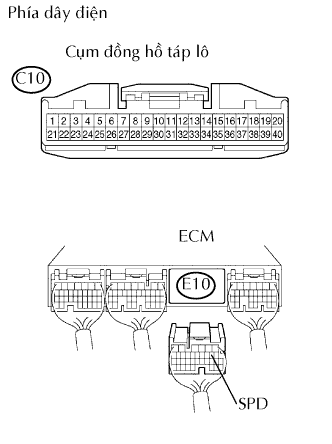

DTC P0500/42 Hỏng cảm biến tốc độ xe |
| Số mã DTC | Điều kiện phát hiện DTC | Khu vực nghi ngờ |
| P0500/42 | Trong khi xe đang chuyển động, không có tín hiệu tốc độ xe đến ECM (thuật toán phát hiện 1 hành trình) |
|
| 1.KIỂM TRA ĐỒNG HỒ TỐC ĐỘ XE (HOẠT ĐỘNG) |
Lái xe. Kiểm tra rằng đồng hồ tốc độ động cơ hoạt động bình thường.
|
| ||||
| OK | |
| 2.KIỂM TRA ECM (ĐIỆN ÁP SPD) |
|  |
Chuyển cần số đến vị trí trung gian.
Hãy kích một bánh xe sau lên.
Bật khoá điện ON.
Quay chậm bánh xe phía sau, và đo điện áp của các giắc nối ECM.
| Nối dụng cụ đo | Điều kiện tiêu chuẩn |
| E10-8 (SPD) - E12-3 (E1) | Điện áp phát ra ngắt quãng |
| Đặt dụng cụ | Điều kiện |
| 2 V/DIV., 10 msec./DIV. | Quay chậm bánh xe sau |
|
| ||||
| NG | |
| 3.KIỂM TRA DÂY ĐIỆN (ĐỒNG HỒ TÁP LÔ - ECM) |
|  |
Ngắt giắc nối C10 của đồng hồ táp lô.
Ngắt giắc nối E10 của ECM.
Đo điện trở của các giắc nối phía dây điện.
| Nối dụng cụ đo | Điều kiện tiêu chuẩn |
| C10-6 - E10-8 (SPD) | Dưới 1 Ω |
| C10-6 hay E10-8 (SPD) - Mát thân xe | 10 kΩ trở lên |
|
| ||||
| OK | ||
| ||